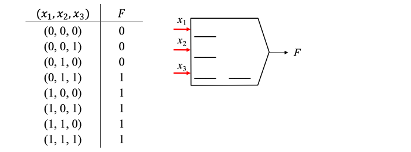

Opcional — Perceptrón unario bipolar¶
30 min | Última modificación: Junio 22, 2019
Definición del problema¶
A continuación se presentan dos circuitos lógicos que implementan un codificador y un decodificador respectivamente. Se desean obtener dos compuertas lógicas que reproduzcan el comportamiento de dichos circuitos. Los valores de las conexiones de las compuertas deben ser números enteros.

Actividad.— Cuál es la salida del codificador para:
(1,0,0,0) = ( _ , _ )
(0,1,0,0) = ( _ , _ )
(0,0,1,0) = ( _ , _ )
(1,0,0,0) = ( _ , _ )
Metodología de Solución¶
Este problema puede ser resuelto usando un perceptrón con entradas y salidas binarias y conexiones entre neuronas que pueden tomar valores enteros. Las conexiones son equivalentes a circuitos eléctricos con resistencias. El siguiente diagrama representa un perceptrón (izquierda) y su notación como una compuerta lógica (derecha).

Matemáticamente este modelo puede representarse como:
Estimación usando restricciones¶
La estimación de los parámetros puede realizarse, planteando y resolviendo las siguientes restricciones (puede existir más de una solución):
\(a \ge 0 \quad \land \quad b \ge 0 \quad \to \quad a + b \ge 0\)
\(a \le 0 \quad \land \quad b \le 0 \quad \to \quad a + b \le 0\)
\(a \gt 0 \quad \land \quad a + b \le 0 \quad \to \quad b \lt 0\)
\(a \le 0 \quad \land \quad a + b \gt 0 \quad \to \quad b \gt 0\)
\(a+b \gt 0 \quad \land \quad a + c \le 0 \quad \to \quad b \gt c\)
\(\sum a_i \gt 0 \quad \land \quad \lambda \gt 0 \quad \to \quad \sum \lambda a_i \gt 0\)
\(\sum a_i \lt 0 \quad \land \quad \lambda \gt 0 \quad \to \quad \sum \lambda a_i \lt 0\)
Actividad.— Estime los parámetros para una compuerta de umbral que calcule la siguiente función:

Separabilidad lineal¶
Uno de los conceptos más importantes es el de separabilidad lineal. La función conmutable \(f(x_1, ..., x_n)\) es linealmente separable si existe una función de umbral tal que:

Red de perceptrones de dos capas¶
Se obtiene al agrupar los perceptrones por capas, y luego conectarlas (las capas).

A continuación se describe una metodología de especificación de perceptrones unarios bipolares (entradas y salidas binarias {0,1} y pesos enteros) a partir de la especificación de la función binaria que deben describir.
Definición 1.— \(\mathbf{P}=\{0,1\}^n\) es el universo de cadenas binarias de longitud \(n\). Un elemento de \(\mathbf{p} \in \mathbf{P}\) es representado como \(p_1 p_2 ... p_n\). \(\mathbf{p}, \mathbf{q}, \mathbf{r} \in \{0,1\}^n\).
Para \(n=3\), \(\mathbf{P}=\{000,001,010,011,100,101,110,111\}\).
Definición 2.— El orden de \(\mathbf{p}\), \(|\mathbf{p}|\), es la cantidad de 1s que tiene la cadena. Por ejemplo, \(|000|=0\) y \(|101|=2\).
Definición 3.— El substractum se define como \(S_\mathbf{p}=\{\mathbf{q} \, | \, \mathbf{q} \cap \mathbf{p}=\mathbf{q}\}\). Es decir, es el conjunto de todas las cadenas posibles que se obtienen al reemplazar en la cadena \(\mathbf{p}\) los 1s por 0s. Por ejemplo:
\(S_{000}=\{000\}\),
\(S_{001}=\{000,001\}\),
\(S_{010}=\{000,010\}\),
\(S_{011}=\{000, 001, 010, 011\}\),
\(S_{100}=\{000,100\}\),
\(S_{101}=\{000,001,100,101\}\),
\(S_{110}=\{000,010,100, 110\}\),
\(S_{111}=\{000,001, 010,011,100,101, 110,111\}\).
Definición 4.— \(F(.)\) es una función lógica booleana, definida como \(F:\{0,1\}^n \to \{0,1\}\) donde la notación \(F_\mathbf{p}\) representa \(F(\mathbf{p})=F_\mathbf{p}\). Cualquier función lógica booleana \(F\) puede ser representada por un perceptrón binario de dos capas cuya función matemática es:
Definición 5.— Cálculo de \(w_\mathbf{q}\). Los valores de \(w_\mathbf{q}\) se pueden calcular como:
Ejemplo: Los pesos \(w_\mathbf{q}\) para la función \(F\) definida como \(F_{000}=F_{001}=F_{010}=0\) y \(F_{011}=F_{100}=F_{101}=F_{110}=F_{111}=1\), son:
\(w_{000}=F_{000}=0\)
\(w_{001}= -F_{000}+F_{001}=0\)
\(w_{010}=-F_{000}+F_{010}=0\)
\(w_{011}=F_{000}-F_{010}-F_{001}+F_{011}=1\)
\(w_{100}=-F_{000}+F_{100}=1\)
\(w_{101}=F_{000}-F_{001}-F_{100}+F_{101}=0\)
\(w_{110}=F_{000}-F_{100}-F_{010}+F_{110}=0\)
\(w_{111}= -F_{000}+F_{001}+F_{010}-F_{011}+F_{100}-F_{101}-F_{110}+F_{111}=-1\)
Definición 6.— Cálculo de \(M_\mathbf{q}\). La función máscara se define como:
\(M_\mathbf{q}\) puede ser escrita como un producto de funciones de pixel:
con \(\mathbf{q} = q_1 \, q_2 \, ... \, q_n\), y
de tal forma que: \(M_{000}= 1*1*1=1\), \(M_{001}=1*1*x_3=x_3\), \(M_{011}=1*x_2*x_3\) y así sucesivamene.
Nótese que \(M_\textbf{q}=x_i * x_j * ...* x_k\), es una operación lógica AND la cual puede ser representada por una función de umbral, es decir, \(M_\mathbf{q}=\text{step} (x_i+x_j+...+x_k-T)\), donde \(T\) es la cantidad de variables en \(x_i\), \(x_j\), …, \(x_k\).
Para el ejemplo planteado:
\(M_{000}=1\),
\(M_{001}=\text{step}(x_3-1)\),
\(M_{010}=\text{step}(x_2-1)\),
\(M_{011}=\text{step}(x_2+x_3-2)\),
\(M_{100}=\text{step}(x_1-1)\),
\(M_{101}=\text{step}(x_1+x_3-2)\),
\(M_{110}=\text{step}(x_1+x_2-2)\),
\(M_{111}=\text{step}(x_1+x_2+x_3-3)\).
Finalmente, para el ejemplo desarrollado se obtiene:
Actividad.— Resuelva el caso del codificador propuesto al inicio de este tutorial.
Actividad.— Resuelva el caso del decodificador propuesto al inicio de este tutorial.
Actividad.— Complete el siguiente código que implementa una red de neuronas unarias bipolares usando NumPy.
Ayuda: Los vectores \(w_\mathbf{q}\) y \(M_\mathbf{q}\) se pueden representar como diccionarios.
[1]:
%clear
class BipolarNeuron:
def __init__(self, n):
"""
n es el numero de entradas a la red
"""
pass
def fit(self, x, y):
"""
x son las entradas, y es la salida esperada
"""
pass
def predict(self, x):
"""
Pronostica la salida para una lista de entradas.
>>> x = [[0, 0, 0], [0, 0, 1], [0, 1, 0], [0, 1, 1],
... [1, 0, 0], [1, 0, 1], [1, 1, 0], [1, 1, 1]]
>>> y = [0, 0, 0, 1,
... 1, 1, 1, 1]
>>> m = BipolarNeuron(3)
>>> m.fit(x, y)
>>> m.predict(x)
[0, 0, 0, 1, 1, 1, 1, 1]
"""
pass
if __name__ == "__main__":
import doctest
doctest.testmod()
**********************************************************************
File "__main__", line 25, in __main__.BipolarNeuron.predict
Failed example:
m.predict(x)
Expected:
[0, 0, 0, 1, 1, 1, 1, 1]
Got nothing
**********************************************************************
1 items had failures:
1 of 5 in __main__.BipolarNeuron.predict
***Test Failed*** 1 failures.